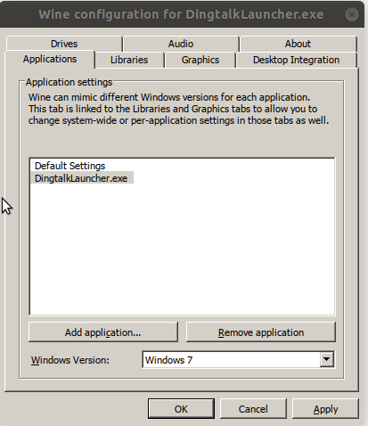
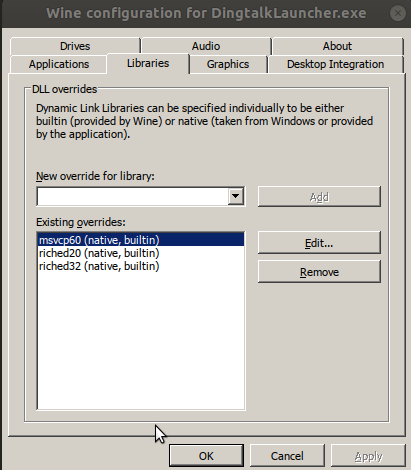

更改mac地址
- 使用ifconfig 查看网口
- 安装macmanager
sudo apt install macchanger - 随机生成一个mac地址
sudo macchanger -r enp60s0enp60s0是网口，-r代表的是随机random的意思，macchanger会帮我们修改成一个随机产生的MAC号 - 修改为指定的mac地址
sudo macchanger -m AA:BB:CC:DD:EE:FF enp60s0\
ubuntu18.04 网口创建网络共享
- 终端输入nm-connection-editor打开网络连接

- 创建以太网链接

- 配置网络链接


- 将其他需要上网的设备通过网线链接到共享网络即可
xvfb ssh
xvfb-run -s "-screen 0 1400x900x24" python <your_script.py>
x forward
ssh -X username@ip
vscode 插件 Remote-ssh
conda install jupyter
github下载提速
git clone https://github.com/Amritpal-001/Reinforcement-learning-projects.git
改为
git clone http://hub.fastgit.org/Amritpal-001/Reinforcement-learning-projects.git
github 下载工具
https://www.python.org/ftp 下载慢
wget https://www.python.org/ftp/python/3.7.5/Python-3.7.5.tgz
改为
wget https://npm.taobao.org/mirrors/python/3.7.5/Python-3.7.5.tgz
pip 下载东西慢
pip3.7.5 install -i http://mirrors.aliyun.com/pypi/simple/ psutil decorator numpy protobuf==3.11^C scipy sympy cffi grpcio grpcio-tools requests --user --trusted-host mirrors.aliyun.com
-i http://mirrors.aliyun.com/pypi/simple --trusted-host mirrors.aliyun.com
mkdocs
mkdocs build
mkdocs serve
push sites folders
vscode python ros debug
首先
catkin_make -DCMAKE_BUILD_TYPE=DEBUG
其次点击debug按钮，选择生成新的launch文件。
然后点击 show,
ｄebug时遇到路径问题,例如rosmsg路径，最好在文件属性里复制路径，不然容易出错
import sys
sys.path.append("/home/pmjd/Downloads/catkin_ws/devel/lib/python2.7/dist-packages")
Tilix doesnt open in the folder from where it is split
Update ~.bashrc (or ~.zshrc if you are using zsh) to execute vte.sh directly, this involves adding the following line at the end of the file.
if [[ $TILIX_ID ]]; then
source /etc/profile.d/vte.sh
fi
On Ubuntu (18.04), a symlink is probably missing. You can create it with:
ln -s /etc/profile.d/vte-2.91.sh /etc/profile.d/vte.sh
sudo dist-upgrade 是毁灭性的，会升级cuda
github init
git config --global user.email "you@example.com"
git config --global user.name "Your Name"
git add .
git commit -m "1"
git push
命令行打开文件管理器
nautilus --browser ~/文档
安装汉语输入法
先在设置里设置language里添加Chinese
sudo apt-get install ibus-libpinyin ibus-clutter
Docker创建容器
构建ubuntu18.04映像
安装依赖
sudo apt-get install debootstrap
sudo apt install docker.io
sudo chmod 666 /var/run/docker.sock
创建ubuntu 18.04 镜像
sudo debootstrap bionic bionic > /dev/null
sudo tar -C bionic -c . | docker import - bionic/smart_eye
测试
docker run bionic cat /etc/lsb-release
查看镜像
docker images
删除镜像
docker rmi [IMAGE ID]
查看容器运行情况
sudo docker ps -a
退出容器
sudo docker stop 容器id
删除容器
sudo docker rm 容器id
启动镜像
docker run -it bionic/smart_eye /bin/bash
退出镜像
exit
文件传递
从本地至docker
docker cp FILE_PATH 容器ID:/root
从docker 至本地
docker cp 容器ID:/root/data.tar /home/user
更改docker image存放路径
sudo service docker stop
sudo touch /etc/docker/daemon.json
daemon.json
{
"data-root":"/home/pmjd/docker"
}
sudo service docker start
Docker更新apt source.list
sudo nano /etc/apt/sources.list
添加
deb https://mirrors.tuna.tsinghua.edu.cn/ubuntu/ bionic main restricted universe multiverse
deb https://mirrors.tuna.tsinghua.edu.cn/ubuntu/ bionic-updates main restricted universe multiverse
deb https://mirrors.tuna.tsinghua.edu.cn/ubuntu/ bionic-backports main restricted universe multiverse
deb https://mirrors.tuna.tsinghua.edu.cn/ubuntu/ bionic-security main restricted universe multiverse
Docker 启动容器
docker start 容器ID
docker attach 容器ID
导出容器快照
docker export c91c33f28594 > smart_eye_docker.tar
容器快照导入为镜像
cat smart_eye_docker.tar | docker import - test/smart_eye:v1
再保存此镜像
docker save -o smart_eye_image_docker.tar test/smart_eye
再加载镜像
docker load --input samrt_eye_image_docker.tar
启动
docker run -it test/smart_eye:v1 /bin/bash
docker 启动bash
docker start c91c33f28594
docker exec -it c91c33f28594 /home/run.sh
docker exec mycontainer /bin/sh -c "cmd1;cmd2;...;cmdn"
docker bash file example
#!/bin/sh
docker run -it --net host --add-host in_release_docker:127.0.0.1 --add-host localhost:127.0.0.1 --hostname in_release_docker --rm promote/smart_eye:v1 /bin/bash -c "/home/run.sh"
sounddevice invalid sample rate
nano /etc/asound.conf
启动快捷方式
1.desktop
[Desktop Entry]
Name=Smart_eye
GenericName=3D modeler
Keywords=3d;cg;modeling;animation;painting;sculpting;texturing;video editing;video tracking;rendering;render engine;cycles;game engine;python;
Exec=/bin/bash -c '/home/promote/run.sh'
#Icon=/home/pmjd/Disk/blender-2.90.1-linux64/blender.svg
Terminal=true
Type=Application
Categories=Graphics;3DGraphics;
MimeType=application/x-blender;
界面显示
xhost +
-e DISPLAY=${DISPLAY} -v /tmp/.X11-unix:/tmp/.X11-unix
安装NVIDIA Container Toolkit
distribution=$(. /etc/os-release;echo $ID$VERSION_ID) \
&& curl -s -L https://nvidia.github.io/nvidia-docker/gpgkey | sudo apt-key add - \
&& curl -s -L https://nvidia.github.io/nvidia-docker/$distribution/nvidia-docker.list | sudo tee /etc/apt/sources.list.d/nvidia-docker.list
curl -s -L https://nvidia.github.io/nvidia-container-runtime/experimental/$distribution/nvidia-container-runtime.list | sudo tee /etc/apt/sources.list.d/nvidia-container-runtime.list
sudo apt-get update
sudo apt-get install -y nvidia-docker2
这个时候 /etc/docker/daemon.json 内容修改为
{
"runtimes": {
"nvidia": {
"path": "nvidia-container-runtime",
"runtimeArgs": []
}
},
"data-root":"/home/pmjd/docker"
}
重启docker
sudo systemctl restart docker
下载运行：
sudo docker run --rm --gpus all nvidia/cuda:11.0-base nvidia-smi
sudo docker run --rm --gpus all nvidia/cuda:10.1-base nvidia-smi
下载运行tensorflow:
docker run --gpus all --runtime=nvidia -it tensorflow/tensorflow:2.3.0-gpu bash
docker配置网络
--net=host
docker 支持麦克,汉语
docker run -it --volume=/run/user/1000/pulse:/run/user/1000/pulse --user promote --gpus all --runtime=nvidia --name=xiaomeng -e LANG=C.UTF-8 --device /dev/snd promote/xiaomeng:v1.6 /bin/bash
docker 运行需要sudo
通过将用户添加到docker用户组可以将sudo去掉，命令如下
sudo groupadd docker #添加docker用户组
sudo gpasswd -a $USER docker #将登陆用户加入到docker用户组中
newgrp docker #更新用户组
bash 登入ssh
#!/usr/bin/expect
set timeout 3
spawn ssh -X promote@192.168.1.2
expect "*password*" {send "123456\r"}
expect "$ " { send "bash /home/username/1.sh\r" }
interact
Nano 删除行
ctrl+k
Nano显示行号
alt+shift+3
修改默认python版本
删除/usr/bin 下的Python链接
sudo rm /usr/bin/python
用下面命令建立新的链接
sudo ln -s /usr/bin/python3.6 /usr/bin/python
用下面的命令还原2版本
sudo ln -s /usr/bin/python2.7 /usr/bin/python
更科学的做法是：
sudo update-alternatives --install /usr/bin/python python /usr/bin/python2.7 1
sudo update-alternatives --install /usr/bin/python python /usr/bin/python3.6 2
sudo update-alternatives --config python 选择要使用的版本，回车，搞定
设置默认pip版本
sudo update-alternatives --install /usr/bin/pip pip /usr/bin/pip2 1
sudo update-alternatives --install /usr/bin/pip pip /usr/bin/pip3 2
sudo update-alternatives --config pip
pip升级
sudo pip install --upgrade pip
桌面快捷方式
[Desktop Entry]
Name=smart_view
GenericName=3D modeler
Keywords=python;
Exec=/bin/bash -c 'source /opt/ros/melodic/setup.bash;rosrun image_view image_view image:=/smart_eye_view'
#Icon=/home/pmjd/Disk/blender-2.90.1-linux64/blender.svg
Terminal=false
Type=Application
Categories=Graphics;3DGraphics;
MimeType=application/x-blender;
Name[en_US]=smart_view
md公式里添加空格
\quad或者 \+空格 或者  
md添加多行公式

<img src="https://latex.codecogs.com/svg.image?\&space;\begin{bmatrix}x\\y\\z\end{bmatrix}=K^{-1}_{3\times 3}\begin{bmatrix}z\cdot(x_c+\delta_{x_c})\\z\cdot(y_c+\delta_{y_c})\\z\end{bmatrix}"/>
<img src="https://latex.codecogs.com/svg.image?\&space;\begin{bmatrix}x\\y\\z\end{bmatrix}=K^{-1}_{3\times 3}\begin{bmatrix}z\cdot(x_c+\delta_{x_c})\\z\cdot(y_c+\delta_{y_c})\\z\end{bmatrix}"/>
md添加行内公式
$\theta$ $\theta$
mkdocs 显示公式
pip install https://github.com/mitya57/python-markdown-math/archive/master.zip
在 config.yaml中添加
extra_javascript:
- https://cdnjs.cloudflare.com/ajax/libs/mathjax/2.7.0/MathJax.js?config=TeX-AMS-MML_HTMLorMML
- mathjaxhelper.js
markdown_extensions:
- mdx_math
在docs文件夹下新建 mathjaxhelper.js
MathJax.Hub.Config({
"tex2jax": { inlineMath: [ [ '$', '$' ] ] }
});
MathJax.Hub.Config({
config: ["MMLorHTML.js"],
jax: ["input/TeX", "output/HTML-CSS", "output/NativeMML"],
extensions: ["MathMenu.js", "MathZoom.js"]
});
这样就可以直接使用 $公式$ 和 $$公式$$
wget 断网重连
wget -t 0 -c < 文件地址>
-c 表示断点续连
-t 表示 断了会每经过几秒重新连接连接一次，0表示一直不断重连，有最大连接次数的。
注意： 记得在原来的目录下执行这个命令，才会接着上文下载，找不到文件直接重新下载
指令查看硬盘存储情况
df -h
查看所有硬盘
lsblk
挂载硬盘
sudo fdisk -l #查看磁盘信息
sudo blkid #查看分区
mkdir NeDisk # 创建挂载点
df -kh #查看已有挂载，确定是否已挂载
sudo umount /dev/sda5 #卸载已挂载
sudo nano /etc/fstab
sudo blkid /dev/sda5 # 找到其UUID
#然后,我们按照/etc/fstab文件中的格式添加一行如下内容:
UUID=0001D3CE0001E53B /home/ubuntu/NewDisk ntfs defaults 0 2
#其中第一列为UUID, 第二列为挂载目录（该目录必须为空目录），第三列为文件系统类型，第四列为参数，第五列0表示不备份，最后一列必须为２或0(除非引导分区为1)
sudo mount -a
查看文件夹的大小
du * -sh
ubuntu vscode 终端空白
File -> Preferences -> Setting -> Features -> Terminal -> Inherit Env
ubuntu 查看显卡
lspci -vnn |grep VGA -A 12
vscode python debug 带参
{
"version": "0.2.0",
"configurations": [
{
"name": "Python: Current File",
"type": "python",
"request": "launch",
"program": "${file}",
"console": "integratedTerminal",
"args": [
"--evaluate","/home/promote/NeDisk/radar_depth/pretrained/resnet18_multistage.pth.tar",
"--data","nuscenes"
]
"env":
{
"PYTHONPATH":"/home/promote/ChineseSpeech"
}
}
]
}
VSCode Ubuntu下调试失败 无法打开 libc-start.c raise.c等
catkin_make -DCMAKE_BUILD_TYPE=debug
添加"open in code" 右键快捷方式
wget -qO- https://raw.githubusercontent.com/cra0zy/code-nautilus/master/install.sh | bash
remote ssh 添加汉语输入法
ibus-daemon -drx
安装钉钉
sudo apt-add-repository 'deb https://dl.winehq.org/wine-builds/ubuntu/ bionic main'
sudo apt-key adv --recv-keys --keyserver keyserver.Ubuntu.com F987672F
sudo apt-get update
sudo apt-get install wine-development
历史版本，钉钉在5.0版本开始可以在线编辑
https://download.alicdn.com/dingtalk-desktop/Release/install/Dingtalk_Release_v1.10.0.msi
https://download.alicdn.com/dingtalk-desktop/Release/install/Dingtalk_Release_v1.11.0.msi
https://download.alicdn.com/dingtalk-desktop/Release/install/Dingtalk_Release_v1.11.1.msi
https://download.alicdn.com/dingtalk-desktop/Release/install/Dingtalk_Release_v1.12.0.msi
https://download.alicdn.com/dingtalk-desktop/Release/install/Dingtalk_Release_v1.13.1.msi
https://download.alicdn.com/dingtalk-desktop/Release/install/Dingtalk_Release_v1.13.0.msi
https://download.alicdn.com/dingtalk-desktop/Release/install/Dingtalk_Release_v1.15.5.msi
https://download.alicdn.com/dingtalk-desktop/Release/install/Dingtalk_Release_v1.15.6.msi
https://download.alicdn.com/dingtalk-desktop/win_installer/Release/DingTalk_v3.4.5.3.exe
https://download.alicdn.com/dingtalk-desktop/win_installer/Release/DingTalk_v3.4.5.5.exe
https://download.alicdn.com/dingtalk-desktop/win_installer/Release/DingTalk_v3.4.5.8.exe
https://download.alicdn.com/dingtalk-desktop/win_installer/Release/DingTalk_v3.4.5.10.exe
https://download.alicdn.com/dingtalk-desktop/win_installer/Release/DingTalk_v3.4.6.2.exe
https://download.alicdn.com/dingtalk-desktop/win_installer/Release/DingTalk_v3.4.6.7.exe
https://download.alicdn.com/dingtalk-desktop/win_installer/Release/DingTalk_v3.4.6.8.exe
https://download.alicdn.com/dingtalk-desktop/win_installer/Release/DingTalk_v3.4.6.9.exe
https://download.alicdn.com/dingtalk-desktop/win_installer/Release/DingTalk_v3.4.6.11.exe
https://download.alicdn.com/dingtalk-desktop/win_installer/Release/DingTalk_v3.4.6.12.exe
https://download.alicdn.com/dingtalk-desktop/win_installer/Release/DingTalk_v3.4.8.1.exe
https://download.alicdn.com/dingtalk-desktop/win_installer/Release/DingTalk_v3.4.8.2.exe
https://download.alicdn.com/dingtalk-desktop/win_installer/Release/DingTalk_v3.4.8.4.exe
https://download.alicdn.com/dingtalk-desktop/win_installer/Release/DingTalk_v3.4.8.5.exe
https://download.alicdn.com/dingtalk-desktop/win_installer/Release/DingTalk_v3.4.8.6.exe
https://download.alicdn.com/dingtalk-desktop/win_installer/Release/DingTalk_v3.4.8.8.exe
https://download.alicdn.com/dingtalk-desktop/win_installer/Release/DingTalk_v3.4.8.9.exe
https://download.alicdn.com/dingtalk-desktop/win_installer/Release/DingTalk_v3.4.8.10.exe
https://download.alicdn.com/dingtalk-desktop/win_installer/Release/DingTalk_v3.4.8.12.exe
https://download.alicdn.com/dingtalk-desktop/win_installer/Release/DingTalk_v3.4.8.15.exe
https://download.alicdn.com/dingtalk-desktop/win_installer/Release/DingTalk_v3.4.8.18.exe
https://download.alicdn.com/dingtalk-desktop/win_installer/Release/DingTalk_v3.5.0.1.exe
https://download.alicdn.com/dingtalk-desktop/win_installer/Release/DingTalk_v3.5.0.2.exe
https://download.alicdn.com/dingtalk-desktop/win_installer/Release/DingTalk_v3.5.0.3.exe
https://download.alicdn.com/dingtalk-desktop/win_installer/Release/DingTalk_v3.5.0.13.exe
https://download.alicdn.com/dingtalk-desktop/win_installer/Release/DingTalk_v3.5.0.14.exe
https://download.alicdn.com/dingtalk-desktop/win_installer/Release/DingTalk_v3.5.0.15.exe
https://download.alicdn.com/dingtalk-desktop/win_installer/Release/DingTalk_v3.5.0.16.exe
https://download.alicdn.com/dingtalk-desktop/win_installer/Release/DingTalk_v3.5.0.18.exe
https://download.alicdn.com/dingtalk-desktop/win_installer/Release/DingTalk_v3.5.0.21.exe
https://download.alicdn.com/dingtalk-desktop/win_installer/Release/DingTalk_v3.5.1.2.exe
https://download.alicdn.com/dingtalk-desktop/win_installer/Release/DingTalk_v3.5.1.5.exe
https://download.alicdn.com/dingtalk-desktop/win_installer/Release/DingTalk_v3.5.1.6.exe
https://download.alicdn.com/dingtalk-desktop/win_installer/Release/DingTalk_v3.5.1.9.exe
https://download.alicdn.com/dingtalk-desktop/win_installer/Release/DingTalk_v3.5.1.10.exe
https://download.alicdn.com/dingtalk-desktop/win_installer/Release/DingTalk_v3.5.1.11.exe
https://download.alicdn.com/dingtalk-desktop/win_installer/Release/DingTalk_v3.5.1.13.exe
https://download.alicdn.com/dingtalk-desktop/win_installer/Release/DingTalk_v3.5.2.2.exe
https://download.alicdn.com/dingtalk-desktop/win_installer/Release/DingTalk_v3.5.2.3.exe
https://download.alicdn.com/dingtalk-desktop/win_installer/Release/DingTalk_v3.5.2.4.exe
https://download.alicdn.com/dingtalk-desktop/win_installer/Release/DingTalk_v3.5.2.6.exe
https://download.alicdn.com/dingtalk-desktop/win_installer/Release/DingTalk_v3.5.2.7.exe
https://download.alicdn.com/dingtalk-desktop/win_installer/Release/DingTalk_v3.5.2.8.exe
https://download.alicdn.com/dingtalk-desktop/win_installer/Release/DingTalk_v3.5.2.9.exe
https://download.alicdn.com/dingtalk-desktop/win_installer/Release/DingTalk_v3.5.2.12.exe
https://download.alicdn.com/dingtalk-desktop/win_installer/Release/DingTalk_v3.5.2.13.exe
https://download.alicdn.com/dingtalk-desktop/win_installer/Release/DingTalk_v3.5.3.1.exe
https://download.alicdn.com/dingtalk-desktop/win_installer/Release/DingTalk_v3.5.3.2.exe
https://download.alicdn.com/dingtalk-desktop/win_installer/Release/DingTalk_v3.5.3.3.exe
https://download.alicdn.com/dingtalk-desktop/win_installer/Release/DingTalk_v3.5.3.4.exe
https://download.alicdn.com/dingtalk-desktop/win_installer/Release/DingTalk_v3.5.3.6.exe
https://download.alicdn.com/dingtalk-desktop/win_installer/Release/DingTalk_v3.5.3.7.exe
https://download.alicdn.com/dingtalk-desktop/win_installer/Release/DingTalk_v3.5.6.1.exe
https://download.alicdn.com/dingtalk-desktop/win_installer/Release/DingTalk_v3.5.6.21.exe
https://download.alicdn.com/dingtalk-desktop/win_installer/Release/DingTalk_v3.5.6.22.exe
https://download.alicdn.com/dingtalk-desktop/win_installer/Release/DingTalk_v3.5.6.25.exe
https://download.alicdn.com/dingtalk-desktop/win_installer/Release/DingTalk_v4.1.0.21.exe
https://download.alicdn.com/dingtalk-desktop/win_installer/Release/DingTalk_v4.2.0.20.exe
https://download.alicdn.com/dingtalk-desktop/win_installer/Release/DingTalk_v4.2.0.23.exe
https://download.alicdn.com/dingtalk-desktop/win_installer/Release/DingTalk_v4.2.0.25.exe
https://download.alicdn.com/dingtalk-desktop/win_installer/Release/DingTalk_v4.2.0.26.exe
https://download.alicdn.com/dingtalk-desktop/win_installer/Release/DingTalk_v4.2.0.27.exe
https://download.alicdn.com/dingtalk-desktop/win_installer/Release/DingTalk_v4.2.0.28.exe
https://download.alicdn.com/dingtalk-desktop/win_installer/Release/DingTalk_v4.2.6.17.exe
https://download.alicdn.com/dingtalk-desktop/win_installer/Release/DingTalk_v4.2.6.25.exe
https://download.alicdn.com/dingtalk-desktop/win_installer/Release/DingTalk_v4.2.8.29.exe
https://download.alicdn.com/dingtalk-desktop/win_installer/Release/DingTalk_v4.3.7.19.exe
https://download.alicdn.com/dingtalk-desktop/win_installer/Release/DingTalk_v4.3.7.20.exe
https://download.alicdn.com/dingtalk-desktop/win_installer/Release/DingTalk_v4.3.7.27.exe
https://download.alicdn.com/dingtalk-desktop/win_installer/Release/DingTalk_v4.5.0.13.exe
https://download.alicdn.com/dingtalk-desktop/win_installer/Release/DingTalk_v4.5.0.16.exe
https://download.alicdn.com/dingtalk-desktop/win_installer/Release/DingTalk_v4.5.0.17.exe
https://download.alicdn.com/dingtalk-desktop/win_installer/Release/DingTalk_v4.5.0.18.exe
https://download.alicdn.com/dingtalk-desktop/win_installer/Release/DingTalk_v4.5.0.20.exe
https://download.alicdn.com/dingtalk-desktop/win_installer/Release/DingTalk_v4.5.0.21.exe
https://download.alicdn.com/dingtalk-desktop/win_installer/Release/DingTalk_v4.5.0.22.exe
https://download.alicdn.com/dingtalk-desktop/win_installer/Release/DingTalk_v4.5.3.10.exe
https://download.alicdn.com/dingtalk-desktop/win_installer/Release/DingTalk_v4.5.3.22.exe
https://download.alicdn.com/dingtalk-desktop/win_installer/Release/DingTalk_v4.5.5.15.exe
https://download.alicdn.com/dingtalk-desktop/win_installer/Release/DingTalk_v4.5.5.16.exe
https://download.alicdn.com/dingtalk-desktop/win_installer/Release/DingTalk_v4.5.5.18.exe
https://download.alicdn.com/dingtalk-desktop/win_installer/Release/DingTalk_v4.5.5.19.exe
https://download.alicdn.com/dingtalk-desktop/win_installer/Release/DingTalk_v4.5.6.1.exe
https://download.alicdn.com/dingtalk-desktop/win_installer/Release/DingTalk_v4.5.8.12.exe
https://download.alicdn.com/dingtalk-desktop/win_installer/Release/DingTalk_v4.5.8.15.exe
https://download.alicdn.com/dingtalk-desktop/win_installer/Release/DingTalk_v4.5.8.16.exe
https://download.alicdn.com/dingtalk-desktop/win_installer/Release/DingTalk_v4.5.8.18.exe
https://download.alicdn.com/dingtalk-desktop/win_installer/Release/DingTalk_v4.5.8.19.exe
https://download.alicdn.com/dingtalk-desktop/win_installer/Release/DingTalk_v4.5.8.20.exe
https://download.alicdn.com/dingtalk-desktop/win_installer/Release/DingTalk_v4.5.8.21.exe
https://download.alicdn.com/dingtalk-desktop/win_installer/Release/DingTalk_v4.5.8.22.exe
https://download.alicdn.com/dingtalk-desktop/win_installer/Release/DingTalk_v4.5.8.23.exe
https://download.alicdn.com/dingtalk-desktop/win_installer/Release/DingTalk_v4.5.8.29.exe
https://download.alicdn.com/dingtalk-desktop/win_installer/Release/DingTalk_v4.6.3.13.exe
https://download.alicdn.com/dingtalk-desktop/win_installer/Release/DingTalk_v4.6.3.15.exe
https://download.alicdn.com/dingtalk-desktop/win_installer/Release/DingTalk_v4.6.3.21.exe
https://download.alicdn.com/dingtalk-desktop/win_installer/Release/DingTalk_v4.6.5.11.exe
https://download.alicdn.com/dingtalk-desktop/win_installer/Release/DingTalk_v4.6.5.12.exe
https://download.alicdn.com/dingtalk-desktop/win_installer/Release/DingTalk_v4.6.13.9.exe
https://download.alicdn.com/dingtalk-desktop/win_installer/Release/DingTalk_v4.7.5.8.exe
https://download.alicdn.com/dingtalk-desktop/win_installer/Release/DingTalk_v4.7.5.18.exe
https://download.alicdn.com/dingtalk-desktop/win_installer/Release/DingTalk_v4.7.5.19.exe
https://download.alicdn.com/dingtalk-desktop/win_installer/Release/DingTalk_v4.7.5.22.exe
https://download.alicdn.com/dingtalk-desktop/win_installer/Release/DingTalk_v4.7.7.5.exe
https://download.alicdn.com/dingtalk-desktop/win_installer/Release/DingTalk_v4.7.7.8.exe
https://download.alicdn.com/dingtalk-desktop/win_installer/Release/DingTalk_v4.7.7.9.exe
https://download.alicdn.com/dingtalk-desktop/win_installer/Release/DingTalk_v4.7.7.10.exe
https://download.alicdn.com/dingtalk-desktop/win_installer/Release/DingTalk_v4.7.7.18.exe
https://download.alicdn.com/dingtalk-desktop/win_installer/Release/DingTalk_v4.7.8.8.exe
https://download.alicdn.com/dingtalk-desktop/win_installer/Release/DingTalk_v4.7.8.10.exe
https://download.alicdn.com/dingtalk-desktop/win_installer/Release/DingTalk_v4.7.8.12.exe
https://download.alicdn.com/dingtalk-desktop/win_installer/Release/DingTalk_v4.7.8.18.exe
https://download.alicdn.com/dingtalk-desktop/win_installer/Release/DingTalk_v4.7.9.10.exe
https://download.alicdn.com/dingtalk-desktop/win_installer/Release/DingTalk_v4.7.9.14.exe
https://download.alicdn.com/dingtalk-desktop/win_installer/Release/DingTalk_v4.7.9.18.exe
https://download.alicdn.com/dingtalk-desktop/win_installer/Release/DingTalk_v4.7.9.25.exe
https://download.alicdn.com/dingtalk-desktop/win_installer/Release/DingTalk_v5.0.9.10.exe
https://download.alicdn.com/dingtalk-desktop/win_installer/Release/DingTalk_v5.0.9.11.exe
https://download.alicdn.com/dingtalk-desktop/win_installer/Release/DingTalk_v5.0.9.12.exe
https://download.alicdn.com/dingtalk-desktop/win_installer/Release/DingTalk_v5.1.1.11.exe
https://download.alicdn.com/dingtalk-desktop/win_installer/Release/DingTalk_v5.1.1.17.exe
https://download.alicdn.com/dingtalk-desktop/win_installer/Release/DingTalk_v5.1.1.18.exe
https://download.alicdn.com/dingtalk-desktop/win_installer/Release/DingTalk_v5.1.1.20.exe
https://download.alicdn.com/dingtalk-desktop/win_installer/Release/DingTalk_v5.1.1.24.exe
https://download.alicdn.com/dingtalk-desktop/win_installer/Release/DingTalk_v5.1.1.25.exe
https://download.alicdn.com/dingtalk-desktop/win_installer/Release/DingTalk_v5.1.2.9.exe
https://download.alicdn.com/dingtalk-desktop/win_installer/Release/DingTalk_v5.1.2.12.exe
https://download.alicdn.com/dingtalk-desktop/win_installer/Release/DingTalk_v5.1.2.16.exe
https://download.alicdn.com/dingtalk-desktop/win_installer/Release/DingTalk_v5.1.2.21.exe
https://download.alicdn.com/dingtalk-desktop/win_installer/Release/DingTalk_v5.1.5.1.exe
https://download.alicdn.com/dingtalk-desktop/win_installer/Release/DingTalk_v5.1.5.2.exe
https://download.alicdn.com/dingtalk-desktop/win_installer/Release/DingTalk_v5.1.7.5.exe
https://download.alicdn.com/dingtalk-desktop/win_installer/Release/DingTalk_v5.1.7.7.exe
https://download.alicdn.com/dingtalk-desktop/win_installer/Release/DingTalk_v5.1.7.8.exe
https://download.alicdn.com/dingtalk-desktop/win_installer/Release/DingTalk_v5.1.8.2.exe
https://download.alicdn.com/dingtalk-desktop/win_installer/Release/DingTalk_v5.1.8.5.exe
https://dtapp-pub.dingtalk.com/dingtalk-desktop/win_installer/Release/DingTalk_v5.0.0.24.exe
https://dtapp-pub.dingtalk.com/dingtalk-desktop/win_installer/Release/DingTalk_v5.0.0.28.exe
https://dtapp-pub.dingtalk.com/dingtalk-desktop/win_installer/Release/DingTalk_v5.0.0.32.exe
https://dtapp-pub.dingtalk.com/dingtalk-desktop/win_installer/Release/DingTalk_v5.0.0.33.exe
https://dtapp-pub.dingtalk.com/dingtalk-desktop/win_installer/Release/DingTalk_v5.0.0.37.exe
https://dtapp-pub.dingtalk.com/dingtalk-desktop/win_installer/Release/DingTalk_v5.0.5.8.exe
https://dtapp-pub.dingtalk.com/dingtalk-desktop/win_installer/Release/DingTalk_v5.0.5.9.exe
https://dtapp-pub.dingtalk.com/dingtalk-desktop/win_installer/Release/DingTalk_v5.0.5.20.exe
https://dtapp-pub.dingtalk.com/dingtalk-desktop/win_installer/Release/DingTalk_v5.0.6.1.exe
https://dtapp-pub.dingtalk.com/dingtalk-desktop/win_installer/Release/DingTalk_v5.0.7.26.exe
https://dtapp-pub.dingtalk.com/dingtalk-desktop/win_installer/Release/DingTalk_v5.0.7.29.exe
https://dtapp-pub.dingtalk.com/dingtalk-desktop/win_installer/Release/DingTalk_v5.0.8.21.exe
https://dtapp-pub.dingtalk.com/dingtalk-desktop/win_installer/Release/DingTalk_v5.0.8.24.exe
https://dtapp-pub.dingtalk.com/dingtalk-desktop/win_installer/Release/DingTalk_v5.0.9.3.exe
https://dtapp-pub.dingtalk.com/dingtalk-desktop/win_installer/Release/DingTalk_v5.0.9.5.exe
https://dtapp-pub.dingtalk.com/dingtalk-desktop/win_installer/Release/DingTalk_v5.0.9.9.exe
https://dtapp-pub.dingtalk.com/dingtalk-desktop/win_installer/Release/DingTalk_v5.0.9.10.exe
https://dtapp-pub.dingtalk.com/dingtalk-desktop/win_installer/Release/DingTalk_v5.0.9.11.exe
https://dtapp-pub.dingtalk.com/dingtalk-desktop/win_installer/Release/DingTalk_v5.0.9.12.exe
https://dtapp-pub.dingtalk.com/dingtalk-desktop/win_installer/Release/DingTalk_v5.0.11.2.exe
https://dtapp-pub.dingtalk.com/dingtalk-desktop/win_installer/Release/DingTalk_v5.0.12.1.exe
https://dtapp-pub.dingtalk.com/dingtalk-desktop/win_installer/Release/DingTalk_v5.0.15.8.exe
https://dtapp-pub.dingtalk.com/dingtalk-desktop/win_installer/Release/DingTalk_v5.0.15.14.exe
https://dtapp-pub.dingtalk.com/dingtalk-desktop/win_installer/Release/DingTalk_v5.0.15.16.exe
https://dtapp-pub.dingtalk.com/dingtalk-desktop/win_installer/Release/DingTalk_v5.0.15.23.exe
https://dtapp-pub.dingtalk.com/dingtalk-desktop/win_installer/Release/DingTalk_v5.0.15.26.exe
https://dtapp-pub.dingtalk.com/dingtalk-desktop/win_installer/Release/DingTalk_v5.0.16.26.exe
https://dtapp-pub.dingtalk.com/dingtalk-desktop/win_installer/Release/DingTalk_v5.0.16.29.exe
https://dtapp-pub.dingtalk.com/dingtalk-desktop/win_installer/Release/DingTalk_v5.0.16.31.exe
https://dtapp-pub.dingtalk.com/dingtalk-desktop/win_installer/Release/DingTalk_v5.0.16.32.exe
https://dtapp-pub.dingtalk.com/dingtalk-desktop/win_installer/Release/DingTalk_v5.0.16.33.exe
https://dtapp-pub.dingtalk.com/dingtalk-desktop/win_installer/Release/DingTalk_v5.1.1.11.exe
https://dtapp-pub.dingtalk.com/dingtalk-desktop/win_installer/Release/DingTalk_v5.1.1.17.exe
https://dtapp-pub.dingtalk.com/dingtalk-desktop/win_installer/Release/DingTalk_v5.1.1.18.exe
https://dtapp-pub.dingtalk.com/dingtalk-desktop/win_installer/Release/DingTalk_v5.1.1.20.exe
https://dtapp-pub.dingtalk.com/dingtalk-desktop/win_installer/Release/DingTalk_v5.1.1.24.exe
https://dtapp-pub.dingtalk.com/dingtalk-desktop/win_installer/Release/DingTalk_v5.1.1.25.exe
https://dtapp-pub.dingtalk.com/dingtalk-desktop/win_installer/Release/DingTalk_v5.1.1.30.exe
https://dtapp-pub.dingtalk.com/dingtalk-desktop/win_installer/Release/DingTalk_v5.1.2.9.exe
https://dtapp-pub.dingtalk.com/dingtalk-desktop/win_installer/Release/DingTalk_v5.1.2.12.exe
https://dtapp-pub.dingtalk.com/dingtalk-desktop/win_installer/Release/DingTalk_v5.1.2.16.exe
https://dtapp-pub.dingtalk.com/dingtalk-desktop/win_installer/Release/DingTalk_v5.1.2.21.exe
https://dtapp-pub.dingtalk.com/dingtalk-desktop/win_installer/Release/DingTalk_v5.1.5.1.exe
https://dtapp-pub.dingtalk.com/dingtalk-desktop/win_installer/Release/DingTalk_v5.1.5.2.exe
https://dtapp-pub.dingtalk.com/dingtalk-desktop/win_installer/Release/DingTalk_v5.1.7.5.exe
https://dtapp-pub.dingtalk.com/dingtalk-desktop/win_installer/Release/DingTalk_v5.1.7.7.exe
https://dtapp-pub.dingtalk.com/dingtalk-desktop/win_installer/Release/DingTalk_v5.1.7.8.exe
https://dtapp-pub.dingtalk.com/dingtalk-desktop/win_installer/Release/DingTalk_v5.1.8.2.exe
https://dtapp-pub.dingtalk.com/dingtalk-desktop/win_installer/Release/DingTalk_v5.1.8.5.exe
https://dtapp-pub.dingtalk.com/dingtalk-desktop/win_installer/Release/DingTalk_v5.1.9.1.exe
https://dtapp-pub.dingtalk.com/dingtalk-desktop/win_installer/Release/DingTalk_v5.1.9.4.exe
https://dtapp-pub.dingtalk.com/dingtalk-desktop/win_installer/Release/DingTalk_v5.1.9.9.exe
https://dtapp-pub.dingtalk.com/dingtalk-desktop/win_installer/Release/DingTalk_v5.1.9.11.exe
https://dtapp-pub.dingtalk.com/dingtalk-desktop/win_installer/Release/DingTalk_v5.1.10.27.exe
https://dtapp-pub.dingtalk.com/dingtalk-desktop/win_installer/Release/DingTalk_v5.1.10.28.exe
https://dtapp-pub.dingtalk.com/dingtalk-desktop/win_installer/Release/DingTalk_v5.1.11.1.exe
https://dtapp-pub.dingtalk.com/dingtalk-desktop/win_installer/Release/DingTalk_v5.1.11.6.exe
https://dtapp-pub.dingtalk.com/dingtalk-desktop/win_installer/Release/DingTalk_v5.1.11.15.exe
https://dtapp-pub.dingtalk.com/dingtalk-desktop/win_installer/Release/DingTalk_v5.1.11.16.exe
https://dtapp-pub.dingtalk.com/dingtalk-desktop/win_installer/Release/DingTalk_v5.1.11.17.exe
https://dtapp-pub.dingtalk.com/dingtalk-desktop/win_installer/Release/DingTalk_v5.1.11.19.exe
https://dtapp-pub.dingtalk.com/dingtalk-desktop/win_installer/Release/DingTalk_v5.1.11.22.exe
https://dtapp-pub.dingtalk.com/dingtalk-desktop/win_installer/Release/DingTalk_v5.1.15.1.exe
https://dtapp-pub.dingtalk.com/dingtalk-desktop/win_installer/Release/DingTalk_v5.1.15.3.exe
https://dtapp-pub.dingtalk.com/dingtalk-desktop/win_installer/Release/DingTalk_v5.1.15.5.exe
https://dtapp-pub.dingtalk.com/dingtalk-desktop/win_installer/Release/DingTalk_v5.1.15.6.exe
https://dtapp-pub.dingtalk.com/dingtalk-desktop/win_installer/Release/DingTalk_v5.1.15.7.exe
https://dtapp-pub.dingtalk.com/dingtalk-desktop/win_installer/Release/DingTalk_v5.1.15.8.exe
https://dtapp-pub.dingtalk.com/dingtalk-desktop/win_installer/Release/DingTalk_v5.1.15.15.exe
https://dtapp-pub.dingtalk.com/dingtalk-desktop/win_installer/Release/DingTalk_v5.1.15.16.exe
https://dtapp-pub.dingtalk.com/dingtalk-desktop/win_installer/Release/DingTalk_v5.1.15.24.exe
https://dtapp-pub.dingtalk.com/dingtalk-desktop/win_installer/Release/DingTalk_v5.1.21.7.exe
https://dtapp-pub.dingtalk.com/dingtalk-desktop/win_installer/Release/DingTalk_v5.1.21.9.exe
https://dtapp-pub.dingtalk.com/dingtalk-desktop/win_installer/Release/DingTalk_v5.1.21.11.exe
https://dtapp-pub.dingtalk.com/dingtalk-desktop/win_installer/Release/DingTalk_v5.1.21.12.exe
https://dtapp-pub.dingtalk.com/dingtalk-desktop/win_installer/Release/DingTalk_v5.1.21.19.exe
https://dtapp-pub.dingtalk.com/dingtalk-desktop/win_installer/Release/DingTalk_v5.1.22.8.exe
https://dtapp-pub.dingtalk.com/dingtalk-desktop/win_installer/Release/DingTalk_v5.1.22.12.exe
https://dtapp-pub.dingtalk.com/dingtalk-desktop/win_installer/Release/DingTalk_v5.1.22.18.exe
https://dtapp-pub.dingtalk.com/dingtalk-desktop/win_installer/Release/DingTalk_v5.1.22.20.exe
https://dtapp-pub.dingtalk.com/dingtalk-desktop/win_installer/Release/DingTalk_v5.1.26.1.exe
https://dtapp-pub.dingtalk.com/dingtalk-desktop/win_installer/Release/DingTalk_v5.1.26.2.exe
https://dtapp-pub.dingtalk.com/dingtalk-desktop/win_installer/Release/DingTalk_v5.1.26.3.exe
https://dtapp-pub.dingtalk.com/dingtalk-desktop/win_installer/Release/DingTalk_v5.1.27.8.exe
https://dtapp-pub.dingtalk.com/dingtalk-desktop/win_installer/Release/DingTalk_v5.1.27.10.exe
https://dtapp-pub.dingtalk.com/dingtalk-desktop/win_installer/Release/DingTalk_v5.1.27.13.exe
https://dtapp-pub.dingtalk.com/dingtalk-desktop/win_installer/Release/DingTalk_v5.1.27.15.exe
https://dtapp-pub.dingtalk.com/dingtalk-desktop/win_installer/Release/DingTalk_v5.1.27.18.exe
https://dtapp-pub.dingtalk.com/dingtalk-desktop/win_installer/Release/DingTalk_v5.1.28.2.exe
https://dtapp-pub.dingtalk.com/dingtalk-desktop/win_installer/Release/DingTalk_v5.1.28.12.exe
https://dtapp-pub.dingtalk.com/dingtalk-desktop/win_installer/Release/DingTalk_v5.1.33.2.exe
https://dtapp-pub.dingtalk.com/dingtalk-desktop/win_installer/Release/DingTalk_v5.1.33.5.exe
https://dtapp-pub.dingtalk.com/dingtalk-desktop/win_installer/Release/DingTalk_v5.1.33.7.exe
https://dtapp-pub.dingtalk.com/dingtalk-desktop/win_installer/Release/DingTalk_v5.1.33.8.exe
https://dtapp-pub.dingtalk.com/dingtalk-desktop/win_installer/Release/DingTalk_v5.1.33.10.exe
https://dtapp-pub.dingtalk.com/dingtalk-desktop/win_installer/Release/DingTalk_v5.1.33.11.exe
https://dtapp-pub.dingtalk.com/dingtalk-desktop/win_installer/Release/DingTalk_v5.1.33.12.exe
https://dtapp-pub.dingtalk.com/dingtalk-desktop/win_installer/Release/DingTalk_v5.1.33.13.exe
https://dtapp-pub.dingtalk.com/dingtalk-desktop/win_installer/Release/DingTalk_v5.1.36.21.exe
https://dtapp-pub.dingtalk.com/dingtalk-desktop/win_installer/Release/DingTalk_v5.1.36.25.exe
https://dtapp-pub.dingtalk.com/dingtalk-desktop/win_installer/Release/DingTalk_v5.1.36.29.exe
https://dtapp-pub.dingtalk.com/dingtalk-desktop/win_installer/Release/DingTalk_v5.1.36.30.exe
https://dtapp-pub.dingtalk.com/dingtalk-desktop/win_installer/Release/DingTalk_v5.1.36.31.exe
https://dtapp-pub.dingtalk.com/dingtalk-desktop/win_installer/Release/DingTalk_v5.1.39.1.exe
https://dtapp-pub.dingtalk.com/dingtalk-desktop/win_installer/Release/DingTalk_v5.1.39.5.exe
https://dtapp-pub.dingtalk.com/dingtalk-desktop/win_installer/Release/DingTalk_v5.1.39.6.exe
https://dtapp-pub.dingtalk.com/dingtalk-desktop/win_installer/Release/DingTalk_v5.1.39.9.exe
https://dtapp-pub.dingtalk.com/dingtalk-desktop/win_installer/Release/DingTalk_v5.1.39.10.exe
安装钉钉
wine DingTalk_v5.0.9.10.exe
解决方块字问题
拷贝 c:/windows/Fonts 目录下字体至 /usr/share/wine/fonts目录下
下载simsun.ttf 存至 /usr/share/wine/fonts目录下和.wine/drive_c/windows/Fonts目录下
winecfg

这个库可以在win7 或 xp (32位的) 的c:/windows/system32/riched20.dll找到，riched20.dll
再点击函数库选项卡，在新增函数库顶替中分别输入msvcp60、riched20、riched32
 启动钉钉
wine DingtalkLauncher.exe
ubuntu 安装分区
37G “/” ,16G "swap", 1G "/boot" , 其余的是 “/home”
ubuntu 卡屏
第一步：
Ubuntu选择安装界面，在按e键进入编辑界面。
找到 Boot Options ed boot=… initrd=/casper/initrd.lz quiet splash —
修改红色部分（删去 —并添加 nomodeset）如下
Boot Options ed boot=… initrd=/casper/initrd.lz nomodeset quiet splash
接着按 '‘F10’'启动系统.
第二步：
安装结束后，进入选择系统界面。
按’’‘e’’’ 进入编辑开机指令的模式, 同样找到’’‘quite splash’’’ 并在后面加上对应的“nomodeset”,即。
‘’‘quite splash nomodeset’’’
接着按 '‘F10’'启动系统.
1、进去系统之后编辑’’’/etc/default/grub’’’ ：Ubuntu>打开终端机，输入
$sudo vi /etc/default/grub
2.找到这一行:
GRUB_CMDLINE_LINUX_DEFAULT=“quiet splash”
修改为：
GRUB_CMDLINE_LINUX_DEFAULT=“quiet splash nomodeset”
更新GRUB：
$sudo update-grub
重新开机。
ubuntu 安装 rar
sudo apt-get install rar unrar
rar x 文件 #解压
rar a FileName.rar DirName # 压缩
find 查找文件
sudo find / -name 文件名
find 查找含有指定内容的文件
sudo find / -name '*' | xargs grep -r ‘undisortPoints’
文件搜索工具
Fsearch
sudo add-apt-repository ppa:christian-boxdoerfer/fsearch-daily
sudo apt update
sudo apt install fsearch-trunk
CatFish
sudo add-apt-repository ppa:catfish-search/ppa
sudo apt-get update
sudo apt-get install catfish
#!/usr/bin/expect
#!/usr/bin/expect
set timeout 3
for {set i 1} {$ i < 10} {incr i 1} {
spawn ./run.sh
}
spawn sudo insmod /home/promote/AHD_8CH/driver/dvrs_hw.ko
expect "*password*" {send "123456\r"}
spawn sudo -i;
expect "*password*" {send "123456\r"}
expect "#" {send "cd /home/promote/Documents/PanoramaCalibration\r"}
expect "#" {send "source devel/setup.bash\r"}
expect "#" {send "roslaunch panorama_calibration panorama_calibration.launch\r"}
interact
循环启动
run.sh
#!/usr/bin/env bash
docker run -it \
--rm -d \
--gpus all \
--runtime=nvidia \
--name=xiaomeng \
-e LANG=C.UTF-8 \
--net=host \
--device /dev/snd promote/xiaomeng:v1.0 /bin/bash -c \
"source /opt/ros/melodic/setup.bash&&cd home/ChineseSpeech/TensorFlowTTS&&python3 test_microphone.py -d 24"
for_run.sh
#!/bin/bash
i=100
while [ $i -ge 1 ]
do
if ./run.sh; then
echo “Success”
else
echo “Failure, exit status: $?”
break
fi
sleep 5
echo "$i"
(( i-- ))
done
xiaomeng.sh
#!/usr/bin/expect
set timeout 3
set ControlC \x03
#spawn sudo systemctl restart docker
#expect "*password*" { send "123456\r"}
spawn gnome-terminal -t "roscore" -- bash -c " roscore;exec bash"
sleep 1
spawn ./for_run.sh
cd /home/promote/ChineseSpeech/TensorFlowTTS
spawn sudo /bin/bash -c "export LD_PRELOAD=/home/promote/.local/lib/python3.6/site-packages/scikit_learn.libs/libgomp-d22c30c5.so.1.0.0&&source /opt/ros/melodic/setup.bash&&python3 get_msg.py"
expect "*password*" { send "123456\r"}
interact
查看是否安装dpkg
dpkg -l | grep cudnn
串口通信
import serial
#端口，GNU / Linux上的/ dev / ttyUSB0 等 或 Windows上的 COM3 等
portx="/dev/ttyTHS0"
#波特率，标准值之一：50,75,110,134,150,200,300,600,1200,1800,2400,4800,9600,19200,38400,57600,115200
bps=115200
#超时设置,None：永远等待操作，0为立即返回请求结果，其他值为等待超时时间(单位为秒）
timex=5
# 打开串口，并得到串口对象
ser=serial.Serial(portx,bps,timeout=timex)
input = "您好,我是小蒙"
serial_input = input.encode("gbk")
s = b'\x5A\xA5'
s += (len(serial_input)+5).to_bytes(1, 'big')
s += b'\x82\x40\x00'
s += serial_input
s += b'\xff\xff'
#print("s = ", s)
#ss = b'x5a\xa5\x0d\x82\xc4\xfa\xba\xc3,\xce\xd2\xca\xc7\xd0\xa1\xc3\xc9\xff\xff'
#sss = b'x5a\xa5\x0f\x82\x40\x00\xc8\xcb\xc1\xb3\xca\xb6\xb1\xf0\xd6\xd0\xff\xff'
#print("sss = " , sss)
#show = bytes([0x5A,0xA5,0x0f,0x82,0x40,0x00,0xc8,0xcb,0xc1,0xb3,0xca,0xb6,0xb1,0xf0,0xd6,0xd0,0xff,0xff])
#ssss = b'Z\xa5\x0f\x82@\x00\xc8\xcb\xc1\xb3\xca\xb6\xb1\xf0\xd6\xd0\xff\xff'
#print("show =", show)
show_clear = bytes([0x5A,0xA5,0x05,0x82,0x31,0x00,0xff,0xff])
ser.write(show_clear)
ser.write(s)
show_blue = bytes([0x5A,0xA5,0x05,0x82,0x40,0xe3,0x1f,0x1f])
ser.write(show_blue)
ser.close()
阿里源
deb http://mirrors.aliyun.com/ubuntu/ bionic main restricted universe multiverse
deb-src http://mirrors.aliyun.com/ubuntu/ bionic main restricted universe multiverse
deb http://mirrors.aliyun.com/ubuntu/ bionic-security main restricted universe multiverse
deb-src http://mirrors.aliyun.com/ubuntu/ bionic-security main restricted universe multiverse
deb http://mirrors.aliyun.com/ubuntu/ bionic-updates main restricted universe multiverse
deb-src http://mirrors.aliyun.com/ubuntu/ bionic-updates main restricted universe multiverse
deb http://mirrors.aliyun.com/ubuntu/ bionic-backports main restricted universe multiverse
deb-src http://mirrors.aliyun.com/ubuntu/ bionic-backports main restricted universe multiverse
deb http://mirrors.aliyun.com/ubuntu/ bionic-proposed main restricted universe multiverse
deb-src http://mirrors.aliyun.com/ubuntu/ bionic-proposed main restricted universe multiverse
Docker 国内代理
sudo nano /etc/docker/daemon.json
{
"registry-mirrors": ["https://registry.docker-cn.com"],
"runtimes": {
"nvidia": {
"path": "nvidia-container-runtime",
"runtimeArgs": []
}
},
"registry-mirrors": ["https://docker.mirrors.ustc.edu.cn"],
"dns": ["114.114.114.114","8.8.8.8"]
}
Root 执行非root指令
su username -c "echo hello"